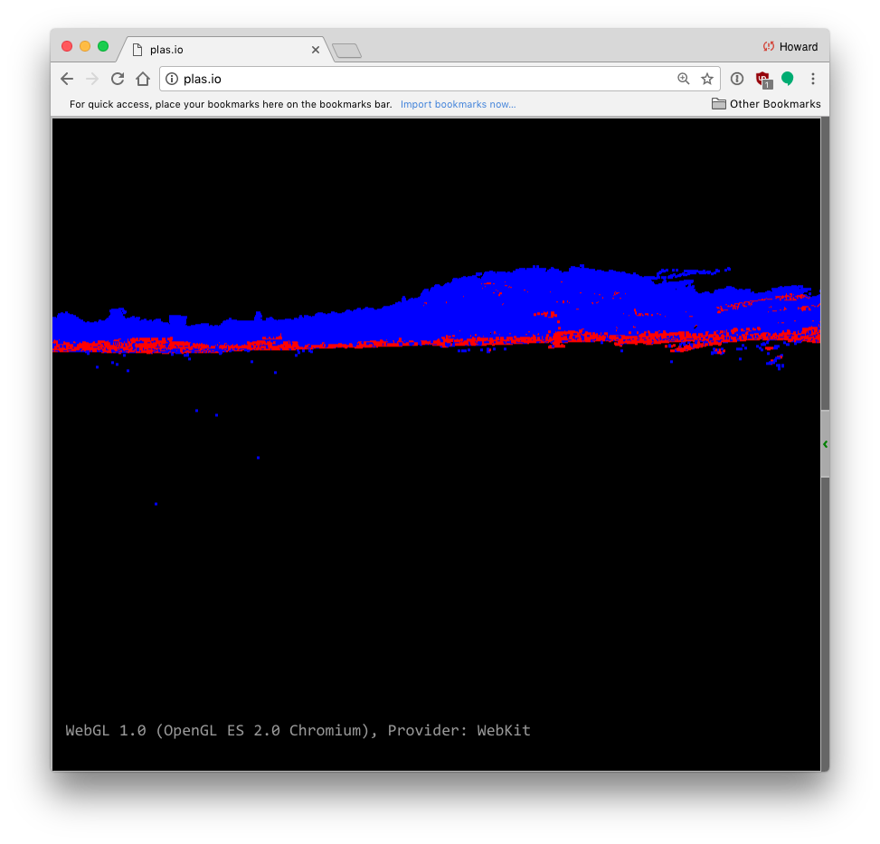

Identifying ground
- Purpose:
- Filter and classify ground points
| [Zhang2003] | Zhang, Keqi, et al. "A progressive morphological filter for removing nonground measurements from airborne LIDAR data." Geoscience and Remote Sensing, IEEE Transactions on 41.4 (2003): 872-882. |
1 2 3 4 5 6 | docker run -v /c/Users/Howard/PDAL:/data -t pdal/pdal \
pdal ground \
/data/exercises/analysis/ground/CSite1_orig-utm.laz \
-o /data/exercises/analysis/ground/ground.laz \
--filters.ground.classify=true \
--writers.las.compression=true -v 4
|
Noise!
1 2 3 4 5 6 7 | docker run -v /c/Users/Howard/PDAL:/data -t pdal/pdal \
pdal ground \
/data/exercises/analysis/ground/CSite1_orig-utm.laz \
-o /data/exercises/analysis/ground/ground-only.laz \
--filters.ground.classify=true \
--filters.ground.extract=true \
--writers.las.compression=true -v 4
|
1 2 3 4 5 6 7 8 9 10 11 12 13 14 | {
"pipeline": {
"name": "Progressive Morphological Filter with Outlier Removal",
"version": 1.0,
"filters": [{
"name": "StatisticalOutlierRemoval",
"setMeanK": 8,
"setStddevMulThresh": 3.0
}, {
"name": "ProgressiveMorphologicalFilter",
"setCellSize": 1.5
}]
}
}
|
1 2 3 4 5 | docker run -v /c/Users/Howard/PDAL:/data -t pdal/pdal \
pdal pcl \
/data/exercises/analysis/ground/CSite1_orig-utm.laz \
-o /data/exercises/analysis/ground/ground-filtered.laz \
-p /data/exercises/analysis/ground/filter.json
|
On to Generating a DTM